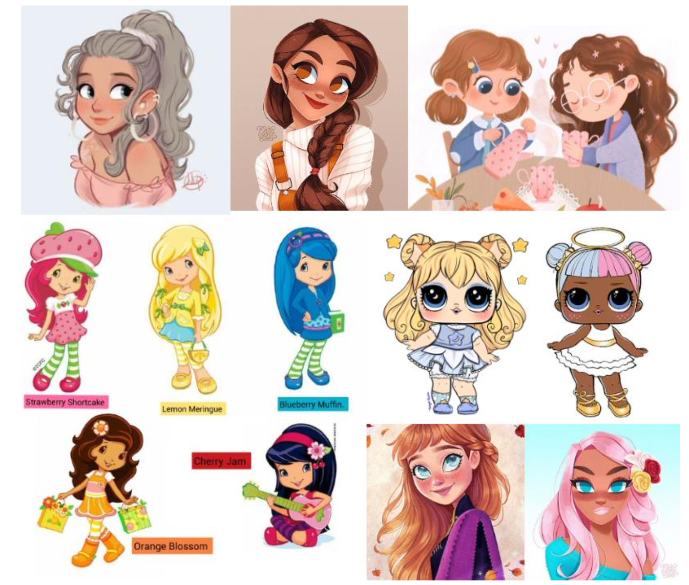

Ide og koncept
Spilkonceptet:
Mit spil hedder Catch ´n´ Drink. Spillet foregår i en Milkshakevogn / van. Hvor det handler om at samle alle de gode ingredienser ind, som du vil bruge til din milkshake. Det kan fx. jordbær, vaniljemælk og chokolade. Derudover går det ud på, ikke at samle de dårlige ingredienser ind. Det kan være ost, fisk eller broccoli. For hver god ingrediens du samler ind, får du 5 point. For hver dårlig ingrediens du samler ind, mister du et milkshake-liv. Der er tid på og du skal have mindst 30 point for at vinde spillet og få din milkshake.
Stil inspiration:
Stilen stammer fra animations børneserier og film, fx strawberry shortcake og LOL surprise. Jeg har valgt at blande stilen, med det lidt mere menneskelige look. Min stil bruger asymmetri, for at få figurerne til at se levende og mere ægte ud. Den har elementer af baby-stilen, for at få figurerne til at se søde ud, fx har de store øjne. Figurerne er bygget op af mere bløde og ikke så firkantede former, der gør de ikke bliver så hårde i udtrykket. Figurerne bærer præg af at være tegnet grafisk og ser ikke håndtegnede ud. Figurernes farver vil være i det pastelfarvede univers, da jeg syntes det passer til min spille ide og til det milkshake-univers jeg vil prøve at skabe.
Typografi:
Jeg har valgt skriftyperne:
- - Signpainter: Til UI-elementer og overskrifter.
- - Avenir: Til brødtekster, så de er lettere at læse.